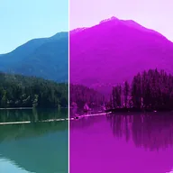

رنگآمیزی

کل لایه را با یک فام رنگ میکند و روشنایی و سایهاش را حفظ میکند. اشباع شدت فام را تعیین میکند؛ زیر 100% لایه به سمت خاکستری میرود.
تنظیمات
| تنظیم | نوع | بازه | پیشفرض |
|---|---|---|---|
| فام | زاویه | 0° تا 360° | 0° |
| مقدار | عدد | 0% تا 100% | 50% |
| اشباع | عدد | 0% تا 100% | 100% |